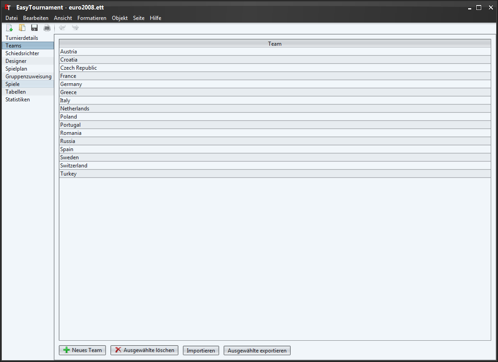
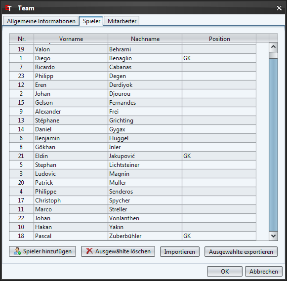
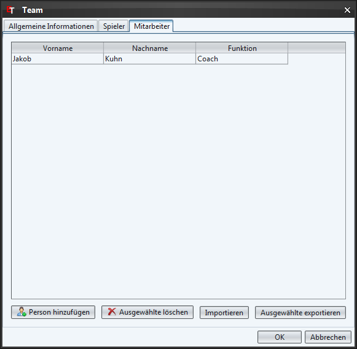

Auf dieser Seite lassen sich Teams erstellen. Dies kann einerseits duch Klicken auf die entsprechende Schaltfläche unten links oder über das Kontext-Menü (rechte Maustaste) gemacht werden.
Mit einem Doppelklick auf ein Team oder über das Kontextmenü (rechte Maustaste) lassen sich Teams bearbeiten.
Über die "Importieren" Schaltfläche ist es möglich Teams aus einem anderen Turnier importieren.
Sie können die Teams auch im XML-Format speichern um sie in anderen Anwendungen weiterverwenden zu können. Dies erreicht man indem man die zu exportierenden Teams markiert und danach auf die Schaltfläche "Ausgewählte exportieren" klickt.
Um ein Logo für das Team auszuwählen klicken sie auf die quadratische Schaltfläche oben rechts und wählen die entsprechende Datei.
Möchten Sie das Logo wieder löschen, dann klicken sie mit der rechten Maustaste auf das Logo und wählen im erscheinenden Kontextmenü den Eintrag "Logo löschen".

Im Tab "Spieler" lassen sich Spieler zum Team hinzufügen. Das Vorgehen ist genau gleich wie bei den Teams. Weitere Details zum Erfassen von Spielern finden sich im Kapitel Spieler.

Im Tab "Mitarbeiter" lassen sich Personen zum Team hinzufügen (z.B. Trainer). Das Vorgehen ist genau gleich wie bei den Teams. Weitere Details zum Erfassen von Spielern finden sie im Kapitel Mitarbeiter.